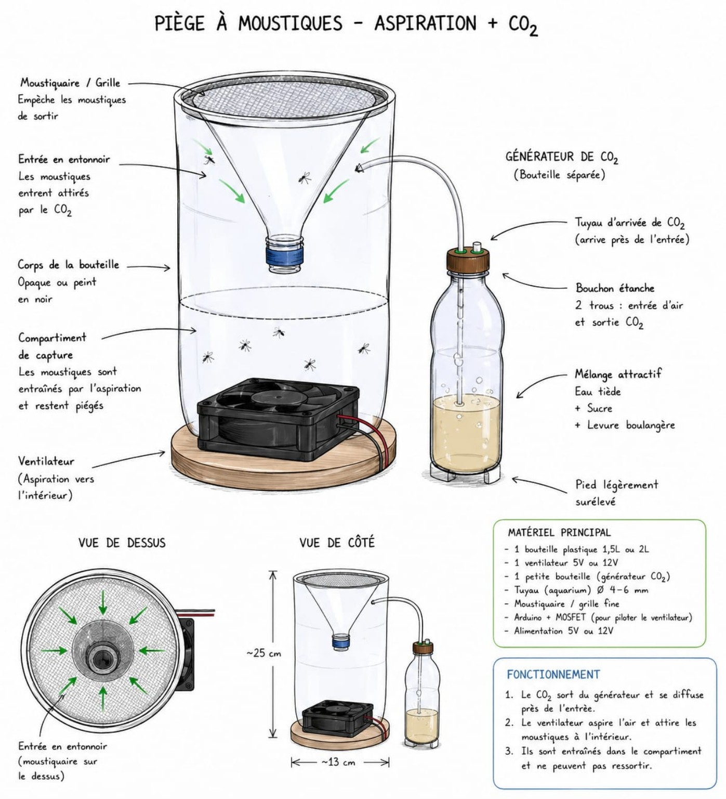

Comment l'idée est née
Un problème du quotidien m'a donné envie d'imaginer une solution technique.
Introduction
Mon projet consiste à créer un appareil qui attire les moustiques et les capture. J'ai eu cette idée parce que ma mère se plaignait souvent de se faire piquer par les moustiques.
Problématique du projet
Les prototypes
Premier prototype
J'ai utilisé une bouteille en plastique, un ventilateur d'ordinateur et un petit filet pour créer une moustiquaire. Je voulais également piloter le système avec un Arduino. Malheureusement, ce prototype n'était pas assez performant.
Deuxième prototype
Je me suis renseigné sur YouTube pour observer les pièges réalisés par d'autres personnes et comparer leurs solutions avec mon premier prototype. Ces recherches m'ont permis de réfléchir aux améliorations possibles.
Schéma technique
Voici le schéma de principe de ma nouvelle conception : le corps du piège, l'entrée, le ventilateur et le compartiment de capture.

Matériel nécessaire
Les principaux composants envisagés pour le projet.
- Boîtes ou récipient réutilisable
- Ventilateur d'ordinateur
- Grille ou filet de capture
- Ruban adhésif et attaches
- Alimentation basse tension adaptée
- Éléments pour étudier l'attraction au CO₂
Étapes de fabrication
Les différentes étapes de réalisation du projet.
- Définir le besoin et formuler la problématique.
- Réaliser un premier prototype.
- Observer les limites du premier prototype.
- Rechercher des exemples de pièges existants.
- Élaborer un nouveau schéma technique.
- Construire et améliorer le prototype.
- Analyser les résultats des essais.
Tests et améliorations
Cette partie sera complétée au fur et à mesure de l'avancement du projet. J'y présenterai les essais, les observations, les difficultés rencontrées et les modifications apportées.
À ajouter : photos des prototypes, dates des essais et résultats observés.